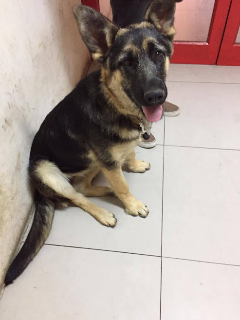
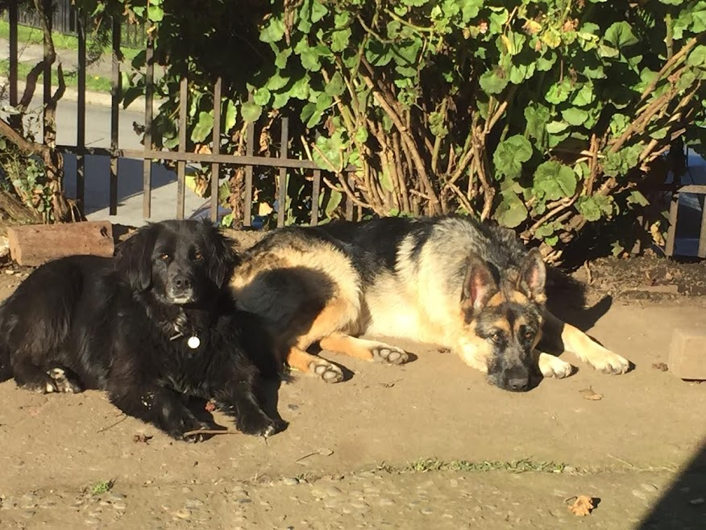

El "Mejor Amigo del Hombre"

El perro (Canis lupus familiaris) se dice que fue el primer animal domesticado por los humanos hasta hoy en día. Se encuentra en varias partes del mundo, en cada continente, país, ciudad, etc. Es un mamífero carnívoro de la familia de los cánidos, que constituye una especie del género Canis. Su tamaño, su forma y pilaje es muy diverso y varía segun la raza del perro. Posee un oído y un olfato muy desarrollados, y este último es su principal órgano sensorial. Su longevidad media es de diez a trece años dependiendo de la raza Los primeros restos fósiles de un perro enterredo junto con seres humanos fueron hayados en Israel, al rededor de unos doce mil años atrás. Desde entonces, los perros y los humanos han ido evolucionando conjuntamente. Tienen una gran relación con los humanos, entre tales relaciones se incluyen servir como compañia, animales de guardia, perros de trabajo, perros de caza, galgos de carrera, perros guía, perros pastores y/o perros boyeros.
Los perros son apreciados por su inteligencia. La inteligencia canina se refiere a la habilidad de un perro de procesar la información que recibe a través de sus sentidos para aprender, adaptarse y resolver problemas. La etología cognitiva es la disciplina que se encarga de estudiar esta área dentro de la cognición animal. La habilidad de aprender rápido ha sido utilizada como uno de los parámetros para medir la inteligencia entre las razas caninas, otras pruebas tienen que ver con el deseo y la habilidad de responder ante diversas situaciones. Los perros guías, por ejemplo, deben aprender un número enorme de órdenes, entender cómo comportarse en una gran variedad de situaciones y reconocer riesgos o peligros a su compañero humano frente a alguno de los cuales nunca se han enfrentado con anterioridad, actuando incluso bajo el comportamiento conocido como desobediencia inteligente que significa que el animal de asistencia irá en contra del deseo de su dueño para evitar una decisión equivocada.

Un perro bien socializado aprende a estar tranquilo y receptivo a la hora de hacer frente a los extraños, los niños, otras mascotas y situaciones no previstas. El desarrollo futuro de cada perro está determinado principalmente por su socialización y educación. Perros mal socializados tendrán dificultades para adaptarse a su entorno y tenderán a presentar conductas y actitudes temerosas o agresivas, junto con otros trastornos del comportamiento. Los procesos de socialización que no se producen en las primeras catorce semanas de vida no pueden ser sustituidos. Un cachorro sin socialización con catorce semanas de vida será muy difícil de educar y/o adiestrar. En qué medida esto se traduce en trastornos de la conducta dependerá de la evaluación del perro de forma individual. Debido a que son animales con tendencia a usar guaridas en el momento del parto y para criar a sus cachorros, pueden aprender fácilmente comportamientos como mantener su lugar limpio y aceptar estar en un área cerrada como es el caso de una jaula temporal para transporte u otro lugar cercado.